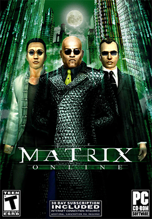
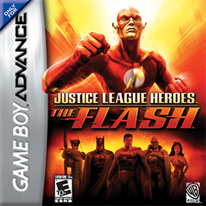
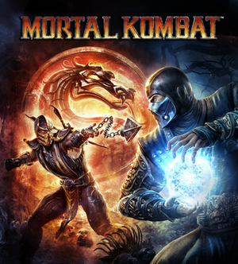
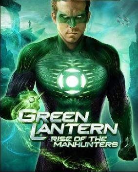
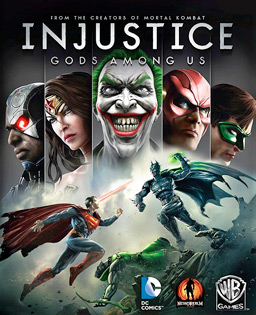
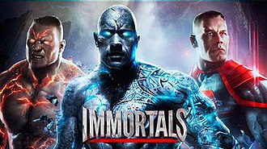
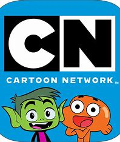
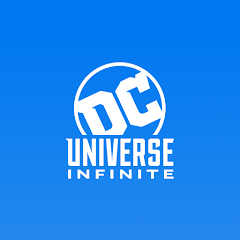

The Matrix Online
Overview
In The Matrix Online, the player assumes the role of a redpill, a human who was formerly trapped inside the Matrix and has since been freed and shown the truth of humanity's imprisonment. When creating a new character, the player is given the choice of taking a blue pill that will return them to their former life (quit the game) or a red pill, which will free their mind from the Matrix and allow them to take the body of a physical human and experience reality.

Justice League Heroes:The Flash
Overview
It covers what the Flash was doing while the other Justice League members were on missions. By the first level, Martian Manhunter warns Flash about a robot invasion in Keystone City, led by Gorilla Grodd. During the second level, Superman and Batman are investigating a break-in at S.T.A.R. Labs while Gotham City is being attacked by both regular criminals and robots.

Mortal Kombat
Overview
During the Armageddon war, all warriors from the realms have been killed, leaving only Raiden and Shao Kahn remaining. Having defeated Blaze, Shao Khan is imbued with godlike power and easily overpowers Raiden. In a final attempt to stop Shao Kahn, Raiden casts one last spell to send a message to his past self through his shattered amulet, with the vague message "He must win" before Shao Kahn delivers a killing blow on him

Green Lantern: Rise of the Manhunters
Overview
The game begins with Hal Jordan, Kilowog, and Sinestro attending Abin Sur's funeral on Oa. When Oa is attacked by the Manhunters, the three defend the power battery and repel the invasion. They then pick up a distress call from Queen Aga'po on the planet Zamaron. While Kilowog goes to Biot, the Manhunters' home world, Sinestro and Hal go to Zamaron to aid Aga'po. While on Zamaron, Sinestro and Hal learn about the Willhunters, a Manhunter-developed weapon which Mind controls its victims.
Batman: Arkham City
Overview
Batman: Arkham City is an open-world action-adventure game that incorporates tactics from stealth games. It is presented from the third-person perspective, showing the playable character on screen and allowing the camera to be freely rotated around it. The game is set within Arkham City, which is open to the player from the beginning of the game, allowing them to travel freely anywhere within its boundaries.
Batman: Arkham Asylum
Overview
Batman: Arkham Asylum is an action-adventure game viewed from the third-person perspective. The playable character is visible on the screen and the camera can be freely rotated around him.[3][4][5] The player controls Batman as he traverses Arkham Asylum, a secure facility for the criminally insane located off the coast of Gotham City.

Injustice: Gods Among Us
Overview
Injustice: Gods Among Us is a fighting game in which players control characters with different fighting styles and special attacks, engaging in one-on-one combat to deplete their opponent's life gauge. The movement is restricted to a two-dimensional plane, while the characters and backgrounds are rendered in three-dimensions. Unlike the traditional fighting game design involving multiple rounds with regenerative life bars, Injustice uses a scheme similar to the Killer Instinct series.

WWE Immortals
Overview
WWE Immortals was a fighting game that took the athletes of the WWE into a reality, their gimmicks, and makes them fantasy heroes. It appeared to be based on WWE Brawl, a cancelled fighting game by THQ. The development team described it as "a free-to-play mobile game that would feature epic Superstar battles in a fantastically re-imagined WWE world

Catoon Network
Overview
Whether you want to catch up on the latest full episodes (available the day after they air!) or take a quick peek at some hilarious clips, fromshows like Teen Titans Go!, The Amazing World of Gumball, Steven Universe, Adventure Time, Ben 10, Uncle Grandpa.
